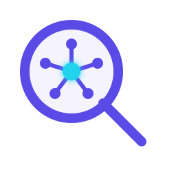
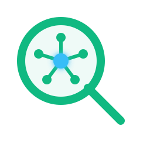

Konsept A · monoline geometrik
Uygulama zemininde (#0a0b0d) karşılaştırma — uygulamanın teması emerald (#10b981)


Boyut testi — açık zemin (256 → 16 px)
Boyut testi — koyu zemin
Sadeleştirilmiş favicon işareti (ağ olmadan — 16px için)
Monokrom — siyah
Monokrom — beyaz
Yazılı kullanım (lockup) — açık zemin
Yazılı kullanım (lockup) — koyu zemin
Palet